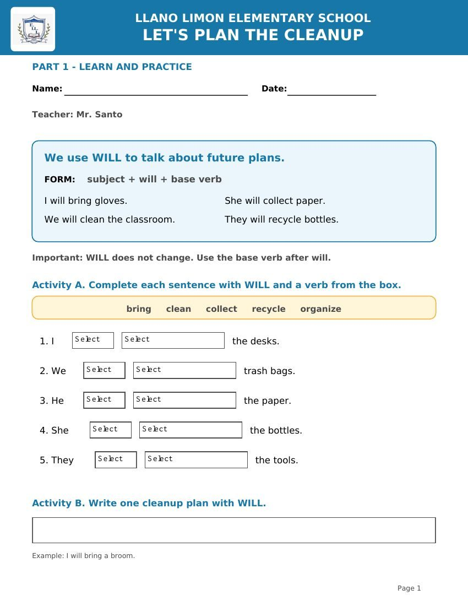
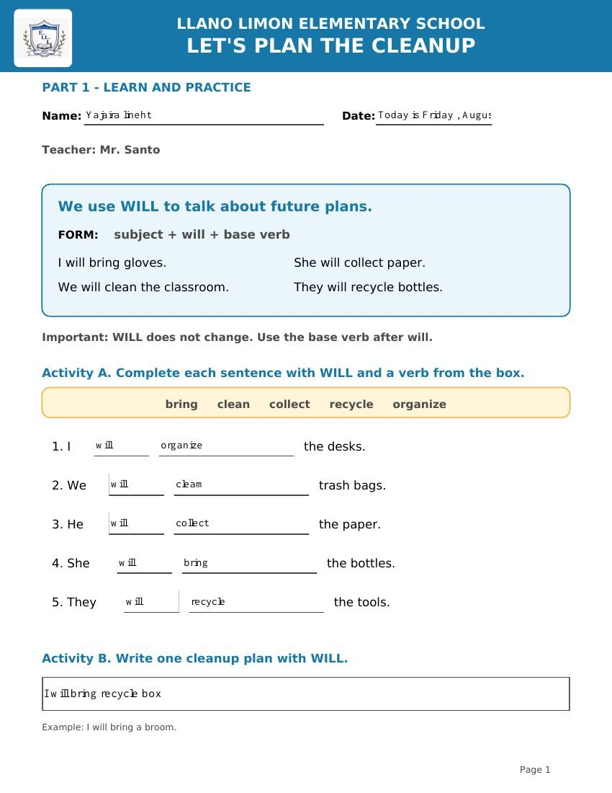

Learning Activity
Guided Worksheet
Students practiced sentences with will and clean-up vocabulary before creating their campaign.
This gallery documents the learning process: students practiced future plans with will, selected cleaning supplies and responsibilities, and created a School Clean-Up Campaign poster as their final performance evidence.
Learning sequence: guided worksheet → collaborative planning → meaningful poster performance.

Students practiced sentences with will and clean-up vocabulary before creating their campaign.

A completed worksheet demonstrates preparation for the final communicative task.
Students submit their worksheet or poster directly to Mr. Santo. The teacher reviews the file, hides personal information when necessary, and uploads it to the appropriate GitHub folder. Students do not need a GitHub account or access code.
Commands, school routines, and visual activities.
Open folderEnglish projects, classwork, and performances.
Open folderMarket role-play, projects, and worksheets.
Open folderMarket role-play, projects, and worksheets.
Open folderClean-up campaign and English projects.
Open folderSuggested filename: Grade_Project_StudentNumber.pdf — Avoid using a student’s full name on a public website.